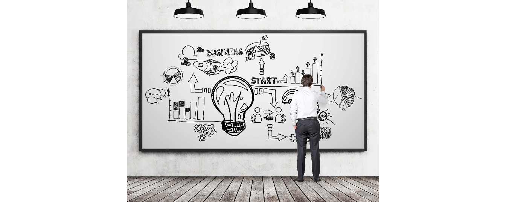

Compromiso académico
Día a día
Microcurrículo
Análisis exploratorio de datos
Clase de regresión
Probabilidad
Distribuciones discretas
Distribuciones continuas
Taller de regresión lineal
Taller de probabilidad
Taller de distribuciones continuas
Plantilla1
plantilla2
Video 1:
Video 2:
-Probabilidad y estadística para ingeniería y ciencias Jay L. Devore
-Guerrero P, A., Buitrago C, M. V., & Curieses P, M. d. (2010). Estadistica Basica (2da ed.). Medellin: Fondo Editorial ITM. Libro